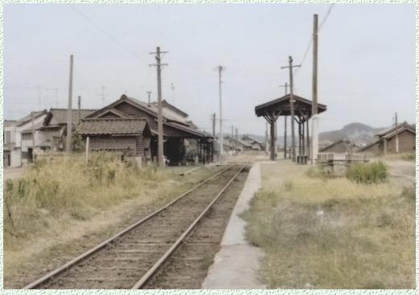

2021（R3）7月22日～23日 加賀・能登の旅
とうとう梅雨も明けて、夏到来っすね。前から一度行きたかったある場所へ行ってきました。
朝の福井駅前。路面電車も停まってます。
もちろん今回も青春１８切符です。
ええ天気や。
おおっと！恐竜がお出迎え。これ、首が動きます。
本気モードに好感持てます。
もちろん、ここは単なる通過点です。
北陸路を青春１８で旅できるのも、あと数年か・・
加賀温泉駅に到着。
新幹線の駅が着々と出来つつあるなぁ。
昔日の面影、全くなし。
しかし、新幹線出来てもうたら、一時的には関東か
らの客が増えるやろうけど、関西の客がわざわざ途
中で乗り換えてまで温泉旅行に来るとは思われへん
で・・・
バスで山代西口へ。
バス停近くのタクシー会社の敷地は、昭和４６年に
廃止された北陸鉄道の山代駅でした。
山代駅跡からまっすぐ５分ぐらい歩くと、山代温泉
の古総湯があります。
「古総湯」といっても、出来たのは最近みたいです。
道後温泉みたいに、２階が休憩スペースになってま
す。
大きな荷物抱えてたので、先に２階に荷物置いても
いいか聞いたら、いやな顔されました。
（キレてないっすよ）
バス停に戻って、次の目的地へ。
車窓から見た山中温泉バスターミナル。
ここも昭和４６年に廃止された山中駅でした。
駅舎のないほうの側と思われます。

バス停「こおろぎ橋」で下車。
徒歩すぐの山中温泉名物「こおろぎ橋」に行ったら、架け替えられてて
趣もなにもなかった・・・
ここから炎天下、７，８分歩いて道の駅へ。
北陸鉄道のしらさぎ号が保存されてます。
廃止後、大井川鉄道で結構最近まで走ってた車両で、鉄コレにもなってます。（買ってもうた）
今回はもう一湯。金沢の奥座敷、湯涌温泉へ。
金沢駅からバス１本で行けます。
夏の夕暮れ、ひぐらしの鳴くいい環境でした。
今日はこれでおしまい。
というのはウソで最後に第７ギョーザへ。
えっ？知らん？
大学時代、仲間と車でよく行った、そこそこ有名な店です。
しか～し！めちゃめちゃ並んでる！！いつのまにこんな人気店に！
諦めて、横のイオンモールでまずいうどん食べて帰りました。
（キレかけたけど、キレてないっすよ）
翌日、今日もええ天気です。
右の七尾線の電車に乗り込みます。
この色、和歌山線の緑とともに、好きな色です。
七尾線もすっかり新型電車に置き換わってます。
宝達駅で下車。
今日は一日、原チャリで走りまわります。
今回レンタルした店は駅まで迎えに来てくれました。
１５分ぐらい歩くつもりやったのでラッキーです。
まずはなぎさドライブウェイへ。
一度ここを走ってみたかったのよ。
日本で唯一、車で走れる砂浜道路です。
快調に走れますわ。

最近は温暖化の影響で道幅が狭くなってるとか。
車同士のすれ違いはちょっとしんどいっすね。
波打ち際まで車で乗りつけて海水浴をしてる人が多
いっすね。
なぎさドライブウェイを北上して抜けると羽咋市内
へ。
今日は能登半島の西側にある巌門まで向かいます。
道の横には廃線跡が。
昭和４７年に廃止になった北陸鉄道能登線です。
廃線跡は、ほぼ自転車道になってます。
高浜のバスターミナルです。
ここが元能登高浜駅跡になります。
建物の中に、少し鉄道関係の資料が展示されてます。

海をみながら北上して、北前船の寄港地の福浦へ。現存する最古
の木造灯台もあります。
巌門が見えてきました。
昭和のベタな観光地といった風情でええ感じです。
右側の人がいるところから上に昇れる穴もあります。
近くからは、周辺を２０分ぐらい周遊してくれる船
が頻発してて、けっこうひかれたのですが時間ない
ので泣く泣くパス。
帰りは能登線の終点だった三明駅跡に寄りました。
ちょっとした集落があるだけの所で、もちろんここ
を目指してたのではなく、資金の関係で結果的に終
点になったみたいです。
残ってたら、海沿いも走るし、風光明媚な観光路線
として活躍してた・・・わけないか。
最後に、行きたかったコスモアイル羽咋に駆け込み
ます。
これ、何かわかりますか？
ボストーク宇宙船です。本物です。
帰還時は、高度６０００ｍで飛行士はこの船から飛
び出してパラシュートで地上に降りたとか。恐るべ
し、ソビエト共産党。
大気圏突入で焼けた跡も生々しい。しかしこんな貴
重なもんが、こんな田舎にあるとは！
たぶん、ソ連崩壊のどさくさで売ってくれたと思わ
れますが、国宝指定になってもおかしくないと個人
的には思います。
最後にもう一度、なぎざドライブウェイを疾走。
途中にある、ハマグリやサザエなどの浜焼貝を食べれる店で夕陽をみながら
ハマグリでも食べたかった・・・でも時間切れでした。
※おまけ情報
鈍行乗り継いで、最終の新快速を尼崎で乗り換えた時、福知山線の乗換え
まで少し時間があったので、そのままホームのベンチに座って待ってたら、
出来の悪そうなじじいの駅員が「乗換えるんですかっ！」て不満そうに言
ってきたので「るっさいなぁ」と、愚息が私に言うような口調で返してし
まいました。このホームから去ってほしいなら、もうちょっとちゃんと言
えっちゅうねん。（人が密な福知山線のホームに素直に行ったったけど。）